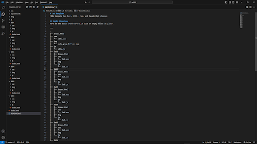
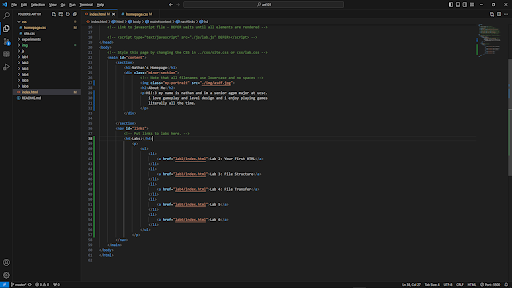
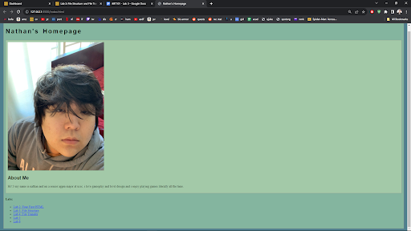
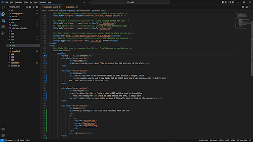
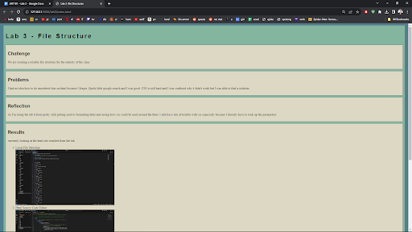

Lab 3 - File Structure
Challenge
We are creating a reliable file structure for the entirety of the class.
Problems
I had no idea how to do unordered lists on html because I forgot. Quick little google search and I was good. CSS is still hard and I was confused why # didn't work but I was able to find a solution.
Reflection
As I'm doing the lab it feels pretty chill getting used to formatting html and seeing how css could be used around the html. I still have lots of trouble with css especially because I literally have to look up the parameters.
Results
currently looking at the html site resulted from the lab
- Local File Structure 
- Html Source Code Editor 
- Index in Browser 
- Lab 3 Html Source Code Editor 
- Lab 3 Index in Browser 